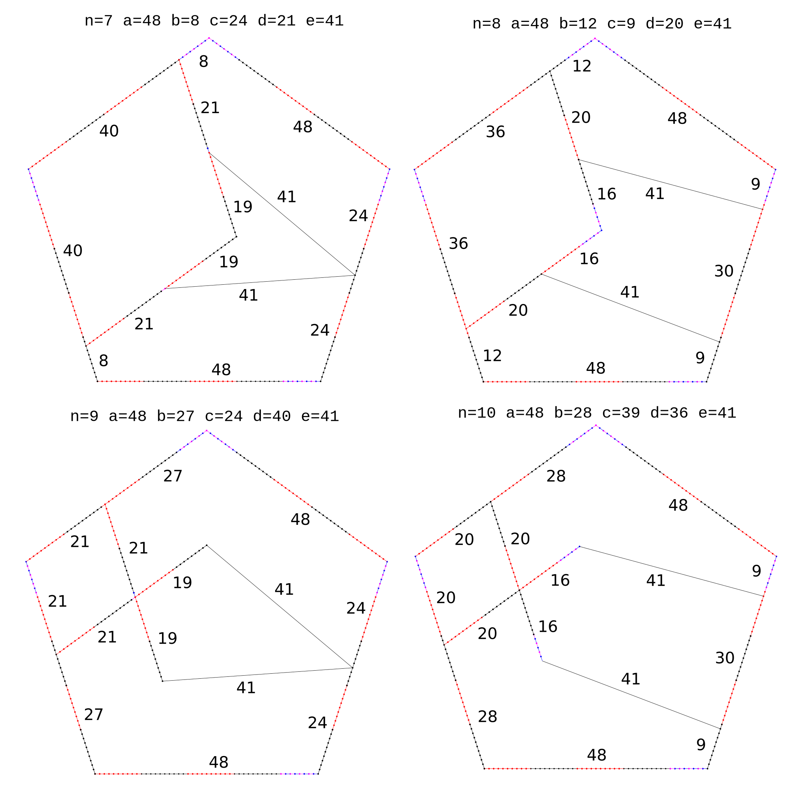

A pentagon type I has three integral rods (or sections of rods) \( a, b, c \) at fixed angles. We want to find a fourth integral rod \( d \) in order to make regular pentagons like the diagram above. We start by looking \( d \) relations with other rods: \begin{align*} d_x^2 &= ( (a + c)\cos(A) + b)^2 \\ &= (a + c)^2\cos^2(A) + 2(a + c)b\cos(A) + b^2 \\ d_y^2 &= ( (a - c)\sin(A))^2 \\ &= (a - c)^2\sin^2(A) \\ d^2 &= d_x^2 + d_y^2 \\ &= (a + c)^2\cos^2(A) + (a - c)^2\sin^2(A) + 2(a + c)b\cos(A) + b^2 \\ &= (a + c)^2(3 - \sqrt{5})/8 \\ &\qquad + (a - c)(5 + \sqrt{5})/8 \\ &\qquad + 2(a + c)b(-1 + \sqrt{5})/4 \\ &\qquad + b^2 \\ &= m\sqrt{5} + n \\ \end{align*} Last equation has two parts, \( m \) with factors of \( \sqrt{5} \) and \( n \) with integers, so: \begin{align*} 8m &= -(a + c)^2 + (a - c)^2 + 4(a + c)b \\ &= 4(a + c)b - 4ac \\ 8n &= 3(a + c)^2 + 5(a - c)^2 - 4(a + c)b + 8b^2 \\ \end{align*} Simplifying: \begin{align*} m &= \frac{ ab - ac + bc}{2} \\ n &= \frac{ a^2 + b^2 + c^2 - ab - ac - cb }{2} \\ &= \frac{ a^2 + b^2 + c^2 - ac }{2} + m \end{align*} \( d\) is an integer when:
Next javascript program finds a single solution for a <= 5000! a=12, b=3, c=4, d=11.
|
|
A pentagon type II has four integral rods (or sections of rods) \( a, b, c, d \) at fixed angles. We want to find a fifth integral rod \( e \) in order to make regular pentagons like the diagram above. We start by looking \( e \) relations with the rest of rods: \begin{align*} e_x &= b\cos(A) + a + c\cos(A) - d\cos(B) \\ &= a + (b + c)\cos(A) - d\cos(B) \\ e_y &= c\sin(A) - b\sin(A) - d\sin(B) \\ &= (c - b)\sin(A) - d\sin(B) \\ e^2 &= e_x^2 + e_y^2 \\ &= a^2 + (b + c)^2\cos^2(A) + d^2\cos^2(B) \\ &\qquad + 2a(b + c)\cos(A) - 2ad\cos(B) \\ &\qquad - 2(b + c)d\cos(A)cos(B) \\ &\qquad + (c - b)^2\sin^2(A) + d^2\sin^2(B) \\ &\qquad - 2(c - b)d\sin(A)\sin(B) \\ &= a^2 - 2(b + c)d / 4 \\ &\qquad + (b + c)^2 ( 3 - \sqrt{5}) / 8 \\ &\qquad + d^2 ( 3 + \sqrt{5}) / 8 \\ &\qquad + 2a(b + c) (-1 + \sqrt{5}) / 4 \\ &\qquad - 2ad( 1 + \sqrt{5}) / 4 \\ &\qquad + (c - b)^2 ( 5 + \sqrt{5}) / 8 \\ &\qquad + d^2 ( 5 - \sqrt{5}) / 8 \\ &\qquad - 2(c - b)d ( \sqrt{5}) / 4 \\ &= m\sqrt{5} + n \\ \end{align*} Last equation has two parts, \( m \) with factors of \( \sqrt{5} \) and \( n \) with integers, so: \begin{align*} 8m &= -(b+c)^2 + d^2 + 4a(b+c) - 4ad + (c-b)^2 - d^2 - 4(c-b)d \\ 8n &= 8a^2 + 3(b+c)^2 + 3d^2 - 4a(b+c) - 4ad - 4(b+c)d + 5(c-b)^2 + 5d^2 \\ \end{align*} Simplifying: \begin{align*} m &= \frac{(a - b)(c - d) + ab - cd}{2} \\ n &= \frac{ a^2 + b^2 + c^2 + d^2 - ((a + b)(c + d) + ab + cd )}{2} \\ &= \frac{ a^2 + b^2 + c^2 + d^2 - ad - bc - cd }{2} + m \end{align*} \( d\) is an integer when:
Next javascript program finds SEVERAL solutions
|
|


n= 7 a=48 b= 8 c=24 d=21 e=41 n= 8 a=48 b=12 c= 9 d=20 e=41 n= 9 a=48 b=27 c=24 d=40 e=41 n=10 a=48 b=28 c=39 d=36 e=41
fx = a*cosA + b + d*cosE
fy = a*sinA - d*sinE
fx*fx = (a*cosA + b + d*cosE)*(a*cosA + b + d*cosE)
+ a*a*cosA*cosA
+ b*b
+ d*d*cosE*cosE
+ 2*a*b*cosA
+ 2*a*d*cosA*cosE
+ 2*b*d*cosE
fy*fy = (a*sinA - d*sinE)*(a*sinA - d*sinE)
+ a*a*sinA*sinA
- 2*a*d*sinA*sinE
+ d*d*sinE*sinE
f*f = fx*fx + fy*fy =
+ a*a + b*b + d*d
+ 2*a*cosA * b
+ 2*a*cosA * d*cosE
+ 2*b * d*cosE
- 2*a*d * sqrt(sinA*sinA*sinE*sinE)
|
cosA = (-1 + sqrt(5)) / 4
cosE = (c*c + d*d - e*e) / (2*c*d)
2*a*cosA = a*(-1 + sqrt(5)) / 2
d*cosE = (c*c + d*d - e*e) / (2*c)
sinA*sinA = [ (5 + sqrt(5)) / 2 ] / 4
d*sinE*d*sinE = d*d - (d*cosE)*(d*cosE)
= d*d - (c*c + d*d - e*e)*(c*c + d*d - e*e) / (4*c*c)
= [ 4*c*c*d*d - (c*c + d*d - e*e)*(c*c + d*d - e*e) ] / (4*c*c)
sqrt(sinA*sinA*d*sinE*d*sinE) =
= sqrt([ 4*c*c*d*d - (c*c + d*d - e*e)*(c*c + d*d - e*e) ] * (5 + sqrt(5)) / 2) / 2c
f*f =
+ a*a + b*b + d*d
+ (a*(-1 + sqrt(5))/2) * b
+ (a*(-1 + sqrt(5))/2) * (c*c + d*d - e*e) / (2*c)
+ 2*b * (c*c + d*d - e*e) / (2*c)
- 2*a * sqrt( sinA*sinA * sinE*sinE*d*d )
8*fx*fx =
+ 8*a*a*(3 - sqrt(5))/8
+ 8*b*b
+ 8*d*d*(c*c + d*d - e*e)*(c*c + d*d - e*e) / (4*c*c*d*d)
+ 16*a*b*((-1 + sqrt(5)) / 4)
+ 16*a*d*((-1 + sqrt(5)) / 4)*(c*c + d*d - e*e) / (2*c*d)
+ 16*b*d*(c*c + d*d - e*e) / (2*c*d)
=
+1*a*a*(3 - sqrt(5))
+ 8*b*b
+ 2*(c*c + d*d - e*e)*(c*c + d*d - e*e) / (c*c)
+ 4*a*b*(-1 + sqrt(5))
+ 2*a*(-1 + sqrt(5))*(c*c + d*d - e*e) / c
+ 8*b*(c*c + d*d - e*e) / c
8*fx*fx = 8*fxz + 8*fxr*sqrt(5)
8*fxz
=
+ 3*a*a
+ 8*b*b
+ 2*(c*c + d*d - e*e)*(c*c + d*d - e*e) / (c*c)
- 4*a*b*
- 2*a*(c*c + d*d - e*e) / c
+ 8*b*(c*c + d*d - e*e) / c
=
+ 3*a*a* - 4*a*b* + 8*b*b
+ 2*(c*c + d*d - e*e)*(c*c + d*d - e*e) / (c*c)
- 2*a*(c*c + d*d - e*e) / c
+ 8*b*(c*c + d*d - e*e) / c
8*fxr =
- 1*a*a
+ 4*a*b
+ 2*a*(c*c + d*d - e*e) / c
|
8*fy*fy = + a*a*(5 + sqrt(5)) - 16*a*d*sinA*sinE + 8*d*d*( 4*c*c*d*d - (c*c + d*d - e*e)*(c*c + d*d - e*e)) / (4*c*c*d*d) = + a*a*(5 + sqrt(5)) - 16*a*d*sinA*sinE + 2*(4*c*c*d*d - (c*c + d*d - e*e)*(c*c + d*d - e*e)) / (c*c) = + a*a*(5 + sqrt(5)) - 16*a*d*sinA*sinE + 8*d*d - 2*(c*c + d*d - e*e)*(c*c + d*d - e*e) / (c*c) |